Le besoin client.
Contacts, demandes,
opportunités et documents.

MIRSMANAGEMENT SYSTEMEntrer dans mon espacePOSTE DE COORDINATION MIRS
CONAKRY, GUINÉE / FRUne intervention à préparer. Une équipe à mobiliser. Un projet à suivre.
Reliez chaque étape de votre activité.
01 / RELIER LES OPÉRATIONS
Maintenance, informatique, réseaux et systèmes : les informations circulent entre le besoin du client, l’intervention et le suivi administratif.
Contacts, demandes,
opportunités et documents.
Équipes · Planning · Projets · Matériel
MIRS MANAGEMENTLivrables, validations,
facturation et rapports.
Le contexte reste lié au dossier, du premier échange au suivi final.
02 / EN PRATIQUE
Choisissez un parcours pour voir comment les modules se complètent.Exemples illustratifs, sans données client réelles.
Préparez le dossier, coordonnez l’équipe technique et conservez les éléments de l’intervention.
Retrouver le client, le contexte et les documents du dossier.
Définir les tâches, le responsable, la date et le matériel nécessaire.
Mettre à jour les tâches et rassembler les pièces et livrables.
Conserver le suivi de la mission et ses documents commerciaux.
03 / L’ENVIRONNEMENT COMPLET
Les fonctions de gestion, de coordination, de création et de communication sont réunies dans votre espace MIRS.
Explorer mon espace OUVREZ UN MODULE POUR EN SAVOIR PLUSIndicateurs, objectifs, alertes et suivi d’activité pour orienter les décisions.
Contacts, opportunités, rendez-vous et relances dans un pipeline lisible.
Centralisez les échanges, les documents et les validations de chaque client.
Organisez vos interventions, attribuez les missions et suivez les livrables.
Coordonnez les échéances et la disponibilité des équipes au bureau et sur le terrain.
Devis, factures, paiements, dépenses et exports pour suivre chaque dossier.
Inventaire, réservations, affectations et mouvements du parc matériel.
Profils, rôles, permissions et journal d’activité adaptés aux responsabilités.
Messages, campagnes et historique de contact, avec les fournisseurs configurés.
Préparation des productions, calendrier de contenus et circuits de validation.
Synthèses et actions supervisées, selon les intégrations activées pour MIRS.
Identité MIRS, préférences, rapports et documents rassemblés dans votre espace.
LE CADRE DE VOTRE TRAVAIL
Chaque membre utilise son compte, avec des droits liés à ses responsabilités.
Une palette cohérente, vos coordonnées et des documents aux couleurs de votre organisation.
Retrouvez votre espace sur ordinateur, tablette ou téléphone. Les services externes s’activent après leur configuration MIRS.
04 / PASSER À L’ACTION
ACCÈS PERSONNEL REQUISVotre espace de gestion est disponible en version de recette.
Connectez-vous avec le compte transmis par votre administrateur.